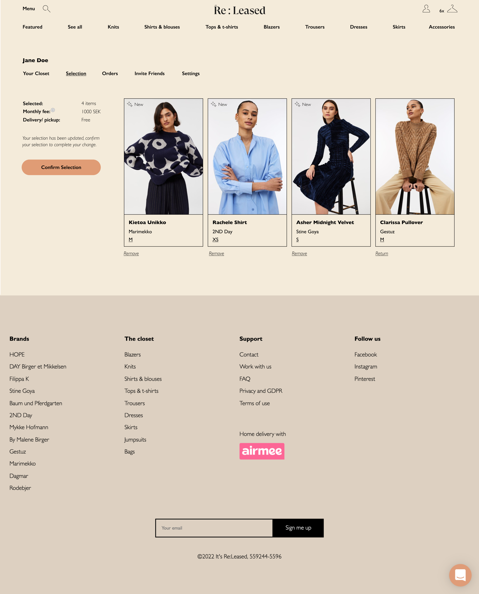
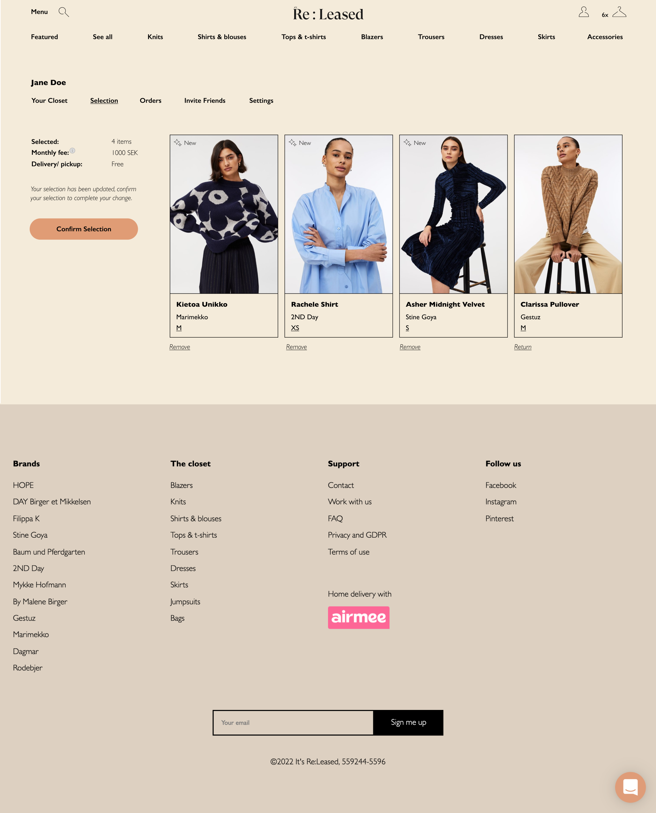

It's Re:Leased
It's Re:Leased is a eComm fashion rental subscription offering access to premium scandi-fashion. It's Re:Leased give you access to great clothes at a price both you and mother earth can afford. Less climate anxiety, more self expression.
My role
As a UX designer and developer I drive the end-to-end design process and develop new features in React, Next.js, Typescript and Tailwind CSS. Together with the tech team, I have developed the product by researching and facilitating workshops, building user flows, wireframes and hi-fi prototypes, and conducting user tests with our subscribers.
Approach
At It’s Released, we have a user centric mindset focusing on creating values for our users and to create
intuitive and useful solutions.
The design is based on an iterative and data driven process including research, ideation and implementation.
Through data and by listening to our users we can understand what problems they are facing and generate new
ideas and opportunities. This is done through workshops, user flows and user journeys, mockups, wireframes
and user tests. After some iteration the design is ready to be developed and launched.
- Employer:
- Services:
- Year:
- Link:
- It's Re:Leased
- UX, Frontend, E-commerce
- 2021-2022
- www.itsreleased.com
 
